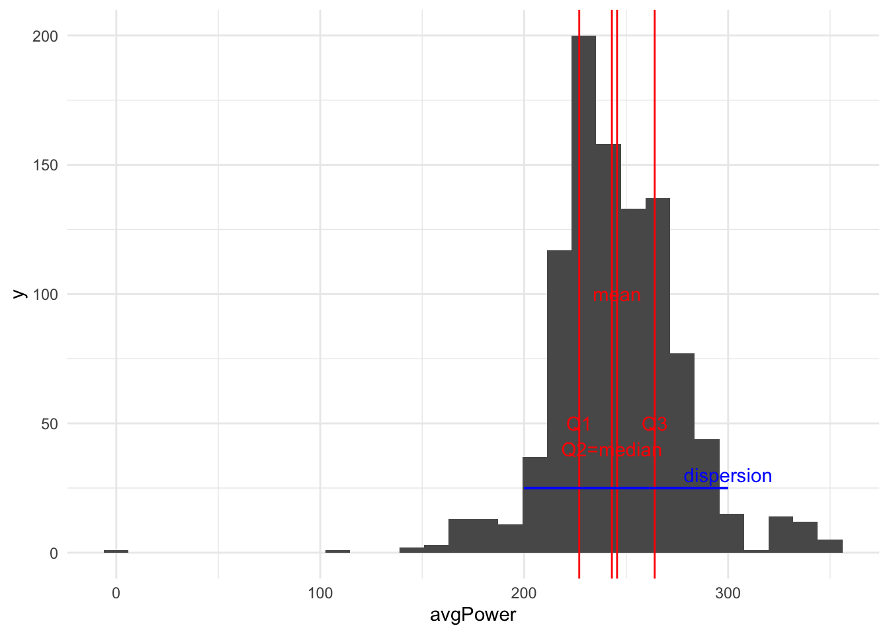
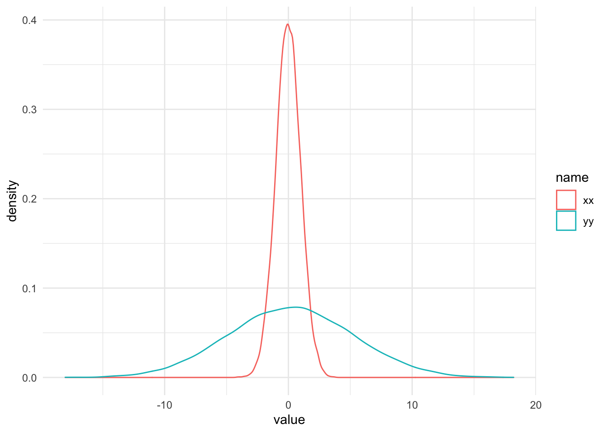
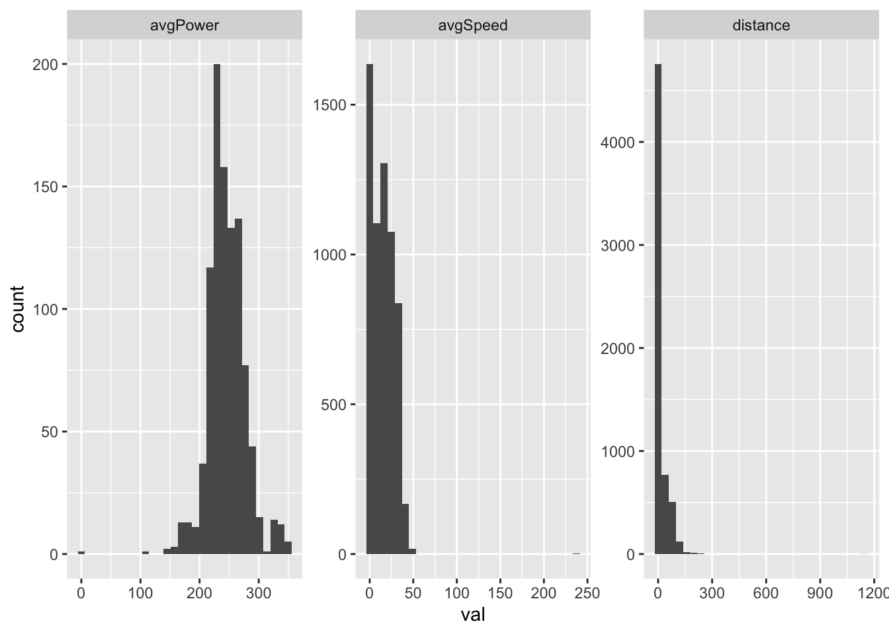
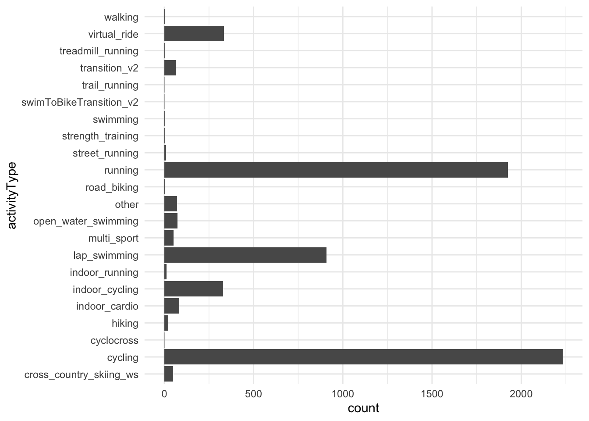
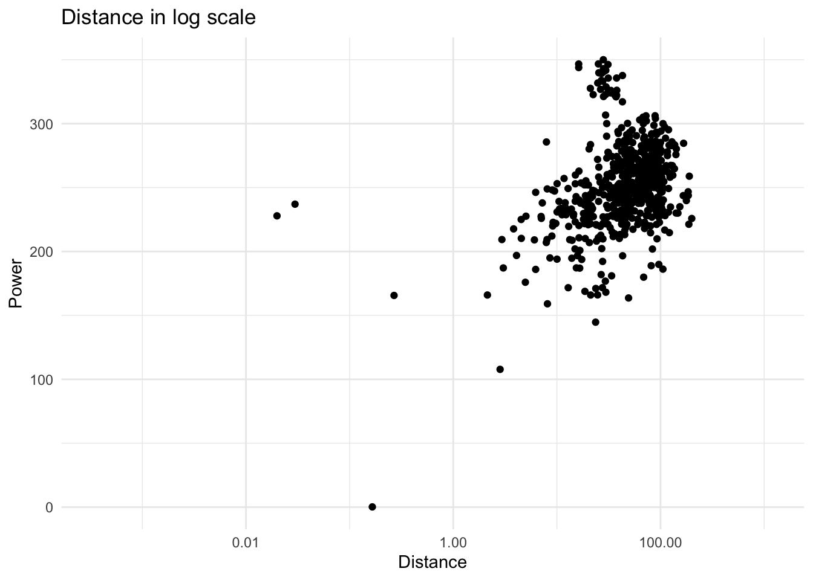
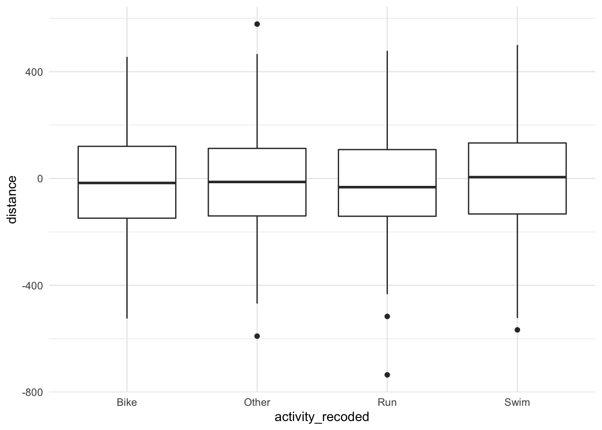
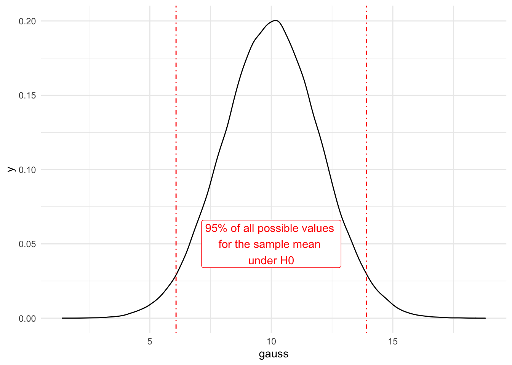
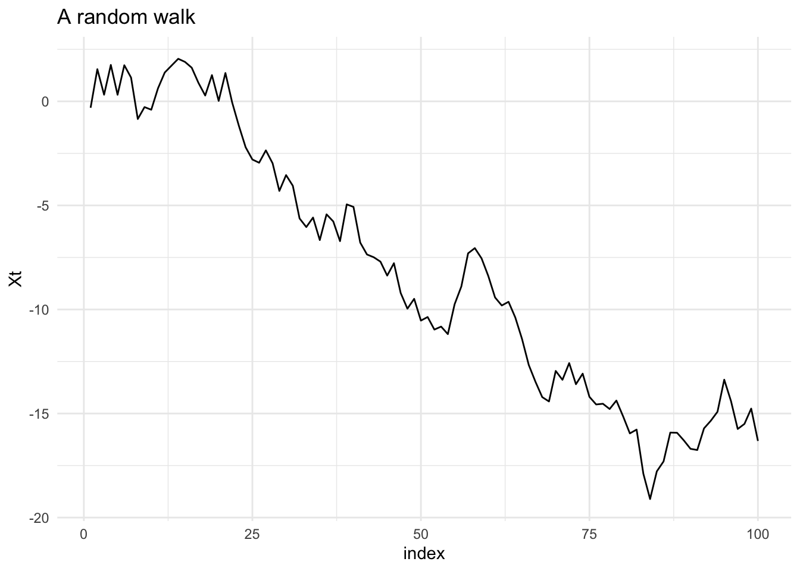

Chapter 5 Statistics
Let’s load and clean the data (which you have done during the exercises)
source("ZZ2-data_preparation.R")This session aims to give a practical guide to explore a dataset you’ve never seen before and to understand some of the key statistical concepts. You will learn to describe each variable of a dataset and assess the strength of the relationship between two variables whatever their types may be. For that, we’ll see how to visually explore a dataset and to quantify what the graphics show. We will also give an overview of what statistical inference is and what it can be used for.
This section covers the following topics :
- Definitions
- Descriptive statistics
- Univariate statistics
- Bivariate statistics
- Statistical inference :
- The statistical model
- Main theorems to be aware of
- Introduction to statistical tests
5.1 Definitions
5.1.1 Terminology
A data set can be viewed in two different manners :
A set of rows, or statistical individuals, aka observations (or instances in the galaxy of machine learning). This can be anything
A set of columns, or variables that describe the individuals
It is crucial to have a good understanding of what the statistical individual is, and that can be challenging !
Some examples :
head(dat)## activityId uuidMsb uuidLsb name
## 1 8117908979 1389057466509903104 -8816744684180752384 Pool Swimming
## 2 8112025942 -8579594978425615360 -6087295519639653376 Zwift - WTRL Team Time Trial - Zone 6 (C)
## 3 8111738850 4389923367750683136 -4813906093171606528 Zwift - .. *3.JOKE?(INC#EA2)'s Meetup - Sleepless City
## 4 8106509382 -3409298562326379008 -6907548221554647040 Vienna Running
## 5 8101019939 8398595148511005696 -7204024095524219904 Zwift - London
## 6 8100932442 -6116764320069431296 -8563845011947501568 Zwift - TdZ Stage 1: Long Ride
## activityType userProfileId timeZoneId beginTimestamp eventTypeId rule sportType startTimeGmt startTimeLocal
## 1 lap_swimming 1141258 124 1.642184e+12 9 public SWIMMING 1.642184e+12 1.642188e+12
## 2 virtual_ride 1141258 124 1.642096e+12 9 public CYCLING 1.642096e+12 1.642099e+12
## 3 virtual_ride 1141258 124 1.642094e+12 9 public CYCLING 1.642094e+12 1.642097e+12
## 4 running 1141258 124 1.642009e+12 9 public RUNNING 1.642009e+12 1.642012e+12
## 5 virtual_ride 1141258 124 1.641928e+12 9 public CYCLING 1.641928e+12 1.641932e+12
## 6 virtual_ride 1141258 124 1.641924e+12 9 public CYCLING 1.641924e+12 1.641928e+12
## duration distance avgSpeed avgHr maxHr avgPower avgBikeCadence maxBikeCadence calories aerobicTrainingEffect
## 1 71.18416 3.40000 3.5748 NA NA NA NA NA 725.0417 NA
## 2 37.91667 27.71270 43.8516 168 181 333 86 104 742.0662 NA
## 3 28.45000 16.40097 34.5888 135 154 240 83 200 391.5626 NA
## 4 70.40072 14.99398 12.7800 148 162 NA NA NA 889.2777 2.4
## 5 10.36667 6.24256 36.1296 138 151 186 78 100 110.1583 NA
## 6 65.90000 49.27470 44.8596 130 180 266 84 103 1025.4733 NA
## strokes normPower avgLeftBalance avgRightBalance max20MinPower avgFractionalCadence maxFractionalCadence
## 1 1390 NA NA NA NA 0.00000 0.0
## 2 0 348.5247 NA NA 342.2592 0.00000 0.0
## 3 0 249.8839 NA NA 252.1425 0.00000 0.0
## 4 NA NA NA NA NA 0.15625 0.5
## 5 0 194.3214 NA NA NA 0.00000 0.0
## 6 0 275.7212 NA NA 291.5917 0.00000 0.0
## trainingStressScore intensityFactor elapsedDuration movingDuration anaerobicTrainingEffect deviceId minTemperature
## 1 NA NA 78.08723 57.76997 NA 3968818126 26
## 2 NA NA 37.88333 37.83333 NA 3825981698 NA
## 3 NA NA 28.43333 28.43333 NA 3825981698 NA
## 4 NA NA 71.55715 70.34502 0 3968818126 7
## 5 NA NA 10.33333 10.30000 NA 3825981698 NA
## 6 NA NA 65.88333 65.83333 NA 3825981698 NA
## maxTemperature lapCount aerobicTrainingEffectMessage anaerobicTrainingEffectMessage purposeful autoCalcCalories
## 1 27 39 NA NA 0 0
## 2 NA 1 NA NA 0 0
## 3 NA 1 NA NA 0 0
## 4 24 15 NA NA 0 0
## 5 NA 1 NA NA 0 0
## 6 NA 1 NA NA 0 0
## favorite pr elevationCorrected atpActivity parent elevationGain elevationLoss maxSpeed maxRunCadence steps
## 1 0 0 0 0 0 NA NA 13.9140 NA NA
## 2 0 0 0 0 0 325 0 69.0192 NA NA
## 3 0 0 0 0 0 76 0 46.2672 NA NA
## 4 0 0 0 0 0 160 183 14.9796 112 12014
## 5 0 0 0 0 0 38 0 57.8988 NA NA
## 6 0 0 0 0 0 266 0 61.2540 NA NA
## startLongitude startLatitude avgVerticalOscillation avgGroundContactTime avgStrideLength vO2MaxValue
## 1 NA NA NA NA <NA> NA
## 2 0.00000 0.00000 NA NA <NA> NA
## 3 0.00000 0.00000 NA NA <NA> NA
## 4 16.31589 48.21407 8.26 248.1 118.240002441406 60
## 5 0.00000 0.00000 NA NA <NA> NA
## 6 0.00000 0.00000 NA NA <NA> NA
## avgVerticalRatio avgGroundContactBalance minElevation maxElevation avgDoubleCadence maxDoubleCadence locationName
## 1 NA NA NA NA NA NA <NA>
## 2 NA NA 1.2 57.8 NA NA <NA>
## 3 NA NA 121.8 130.4 NA NA <NA>
## 4 6.83 48.93 194.8 349.0 172.3125 225 Vienna
## 5 NA NA 4.0 29.0 NA NA Tower Hamlets
## 6 NA NA 10.4 34.0 NA NA Thio
## maxVerticalSpeed endLongitude endLatitude avgStrokes activeLengths avgSwolf poolLength avgStrokeDistance
## 1 NA NA NA 22.4 68 73 5000 223
## 2 4.319999 166.9529124 -11.63601 NA NA NA NA NA
## 3 2.159995 165.8442626 -10.79433 NA NA NA NA NA
## 4 3.600000 16.3033489 48.21414 NA NA NA NA NA
## 5 2.160001 -0.1127895 51.49451 NA NA NA NA NA
## 6 2.160001 166.1724174 -21.73831 NA NA NA NA NA
## avgSwimCadence maxSwimCadence workoutId activeSets totalSets totalReps parentId manufacturer courseId maxFtp
## 1 27 31 <NA> NA NA NA <NA> NA <NA> NA
## 2 NA NA <NA> NA NA NA <NA> NA <NA> NA
## 3 NA NA <NA> NA NA NA <NA> NA <NA> NA
## 4 NA NA <NA> NA NA NA <NA> NA <NA> NA
## 5 NA NA <NA> NA NA NA <NA> NA <NA> NA
## 6 NA NA <NA> NA NA NA <NA> NA <NA> NA
## avgVerticalSpeed decoDive lactateThresholdBpm lactateThresholdSpeed start_time date is_bike is_run
## 1 NA 0 NA NA 2022-01-14 19:14:14 2022-01-14 FALSE FALSE
## 2 NA 0 NA NA 2022-01-13 18:44:12 2022-01-13 TRUE FALSE
## 3 NA 0 NA NA 2022-01-13 18:08:59 2022-01-13 TRUE FALSE
## 4 NA 0 NA NA 2022-01-12 18:30:18 2022-01-12 FALSE TRUE
## 5 NA 0 NA NA 2022-01-11 20:07:09 2022-01-11 TRUE FALSE
## 6 NA 0 NA NA 2022-01-11 19:00:39 2022-01-11 TRUE FALSE
## activity_recoded qual_distance qual_avgHr
## 1 Swim Short <NA>
## 2 Bike Very long <NA>
## 3 Bike Long Average intensity
## 4 Run Long High intensity
## 5 Bike Short Average intensity
## 6 Bike Very long Low intensitygroup_by(dat,activityType) %>%
summarise(total_dist=sum(distance,na.rm=T),avg_speed=mean(avgSpeed,na.rm=T),avg_power=mean(avgPower,na.rm = T),
.groups="keep") %>%
head()## # A tibble: 6 × 4
## # Groups: activityType [6]
## activityType total_dist avg_speed avg_power
## <chr> <dbl> <dbl> <dbl>
## 1 cross_country_skiing_ws 782. 12.6 NaN
## 2 cycling 78241. 23.0 254.
## 3 cyclocross 41.2 18.4 NaN
## 4 hiking 236. 3.85 NaN
## 5 indoor_cardio 0 0 NaN
## 6 indoor_cycling 592. 1.55 225.group_by(dat,date) %>%
summarise(total_dist=sum(distance,na.rm=T),avg_speed=mean(avgSpeed,na.rm=T),avg_power=mean(avgPower,na.rm = T),
.groups="keep") %>%
head()## # A tibble: 6 × 4
## # Groups: date [6]
## date total_dist avg_speed avg_power
## <dttm> <dbl> <dbl> <dbl>
## 1 2008-05-27 00:00:00 9.43 21.0 NaN
## 2 2008-11-25 00:00:00 9.25 23.3 NaN
## 3 2008-11-26 00:00:00 19.9 12.7 NaN
## 4 2008-11-27 00:00:00 21.3 22.1 NaN
## 5 2008-11-28 00:00:00 10.6 13.2 NaN
## 6 2008-11-29 00:00:00 0.208 6.90 NaN5.1.2 Types of variables
The way we analyse variables depends on their type :
- Numerical variables :
- Continuous : income, revenue \(\in \mathbb{R} , \mathbb{R}^+\)
- Discrete : number of person per household \(\in \mathbb{Z} , \mathbb{N}\)
- Categorical variables :
- Ordered : small, medium, large
- Unordered : male, female
5.2 Univariate statistics
5.2.1 Numerical variables
5.2.1.1 Distribution
The distribution of a variable quantifies the number of individuals how have a certain value of the variable. We can visualize the distribution either with histograms or density plot, which are the “empirical counterparts” of the probability density function.
ggplot(dat,aes(avgPower)) + geom_histogram() + theme_minimal()ggplot(dat,aes(avgPower)) + geom_density() + theme_minimal()5.2.1.2 Descriptive statistics
We typically want to measure what the “average” value is, along with “how diverse is my population.” For that, we can use either sum-based statistics (mean, standard deviation) or quantiles. Quantile-based statistics are said to be robust because much less sensitive to outliers. But they are more computationally expensive.
stats <- c(quantile(dat$avgPower,1:3/4,na.rm = T),mean(dat$avgPower,na.rm = T))
ggplot(dat,aes(avgPower)) + geom_histogram() +
geom_vline(xintercept = stats,color="red") +
annotate(geom = "text",x=stats,y=c(50,40,50,100),label=c("Q1","Q2=median","Q3","mean"),color="red") +
geom_segment(aes(x=200,y=25,xend=300,yend=25),color="blue") +
annotate(geom="text",x=300,y=30,label="dispersion",color="blue") + theme_minimal()
5.2.1.2.1 Central tendency
Central tendency statistics allow you to have an idea of the order of magnitude of the attribute you are interested in, over the population.
summary(dat$avgPower)## Min. 1st Qu. Median Mean 3rd Qu. Max. NA's
## 0.0 227.0 243.0 245.5 264.0 350.0 5194quantile(dat$avgPower,probs=0:10/10,na.rm = T)## 0% 10% 20% 30% 40% 50% 60% 70% 80% 90% 100%
## 0.0 214.0 224.0 229.0 235.2 243.0 251.0 260.0 269.0 282.7 350.05.2.1.2.2 Dispersion
Dispersion describes how heterogenous our population is. It can be measured with various measurements (not exhaustive here)
sd(dat$avgPower,na.rm = T) # standard deviation## [1] 31.72316IQR(dat$avgPower,na.rm = T) # interquartile range## [1] 37sd(dat$avgPower,na.rm = T)/mean(dat$avgPower,na.rm = T) # coefficient of variation## [1] 0.1291948How to read it :
- The average deviation to the average power is 29 watts
- The age difference between the rides in the 25% “less powerful” rides and the 25% “most powerful” rides is 37 watts
- The average deviation to the average power is 12% of the average power
The latter allows to compare dispersion between variables that have different units
5.2.1.3 Dealing with various shapes
The traditional example of a distribution is the gaussian distribution
fake <- data.frame(xx=rnorm(100000,100,10))
ggplot(fake,aes(xx)) + geom_histogram() + labs(x="Random variable")+ theme_minimal()
In this case, we have a very interesting property : symmetry, which makes mean and median very close. If the coefficient of variation is not too high, the tail is pretty short.
In real life,it (almost) never happens. Therefore, to understand what happens, you can check :
- How different are mean and median
- Does a log transformation make the distribution “look better”
- Is it symmetric \(\rightarrow\) skewness
- Is flat no not \(\rightarrow\) kurtosis
- Is the distribution highly concentrated (few individuals get almost the whole cake) \(\rightarrow\) concentration indexes (Gini, enthropy, Herfindahl…). You can check the package
ineq - Are there outliers (which generates a long tail) \(\rightarrow\) outlier detection (vast field…). You can start with the previous
Flat or not flat ?
data.frame(xx=rnorm(10000),yy=rnorm(10000,0,5)) %>%
pivot_longer(everything()) %>%
ggplot(aes(value,color=name)) + geom_density()+ theme_minimal()
ggplot(dat,aes(distance)) + geom_histogram() + theme_minimal()
ggplot(dat,aes(distance)) + geom_histogram() + scale_x_log10() + theme_minimal()5.2.1.4 Exercises :
What can you tell about the distance variable ?
- Draw the distribution of this variable. How much is the maximum distance of the 20% shortest activities ; the minimum distance of the 5% longest activities ?
- What unit do you think it is ? Did you check the maximum value ?
- Is there more dispersion in the distance or the average power ? using the
facet_wrapfunction ofggplot2, compare the distributions of distance and avgPower. - I want to group activities in 5 categories based on the distance. This operation is called discretization (very useful for choropleth maps). Search for available methods, and apply some of them. Which one is best suited to this variable ? Which one should you avoid ?
5.2.1.5 Bonus : overlay the distribution of two variables
If you want to compare the distribution of several variables, you can use several methods with ggplot :
- Brute-force overlaying 2
geom_density()plots - Pivot your data to exhibit an underlying variable that you will use in the aesthetics
ggplot(dat) + geom_density(aes(distance),color="blue") +
geom_density(aes(avgPower))
long_data <- select(dat,distance,avgPower,avgSpeed,activityId) %>%
pivot_longer(-activityId,names_to="metric",values_to="val")
ggplot(long_data,aes(val)) + geom_histogram() + facet_wrap(. ~ metric,
scales = "free")
ggplot(long_data,aes(x=val,color=metric)) + geom_density()5.2.2 Categorical variables
5.2.2.1 Working with factors
Factors are an optimized way to store categorical variables (encoded in integers). The distinct categories are stored in the level attribute which you can interact with.
as.factor(dat$activityType) %>%
levels()## [1] "cross_country_skiing_ws" "cycling" "cyclocross" "hiking"
## [5] "indoor_cardio" "indoor_cycling" "indoor_running" "lap_swimming"
## [9] "multi_sport" "open_water_swimming" "other" "road_biking"
## [13] "running" "street_running" "strength_training" "swimming"
## [17] "swimToBikeTransition_v2" "trail_running" "transition_v2" "treadmill_running"
## [21] "virtual_ride" "walking"as.factor(dat$activityType) %>%
str()## Factor w/ 22 levels "cross_country_skiing_ws",..: 8 21 21 13 21 21 21 8 13 21 ...For more functionalities you can use the forcats package which provides convenient tools (eg to recode the variable)
5.2.2.2 Barcharts
The barchart (which IS NOT a histogram) is the most common representation for categorical variables. You can also use the pie chart (but it requires to hack a little ggplot). Pie charts are despised by the majority of statisticians but it can be adapted if the sizes really differ. Some material to make your own opinion :
ggplot(dat,aes(activityType)) + geom_bar() + coord_flip() + theme_minimal()
ggplot(dat,aes(x="",fill=activityType)) +
geom_bar(width=1) +
coord_polar("y",start=0) +
theme_void()5.2.2.3 Contingency tables
After visualizing, how can we measure the number of cases and the percent in each category ?
table(dat$activityType)##
## cross_country_skiing_ws cycling cyclocross hiking
## 48 2232 1 21
## indoor_cardio indoor_cycling indoor_running lap_swimming
## 84 330 13 909
## multi_sport open_water_swimming other road_biking
## 52 74 72 2
## running street_running strength_training swimming
## 1926 10 4 4
## swimToBikeTransition_v2 trail_running transition_v2 treadmill_running
## 1 1 63 4
## virtual_ride walking
## 335 2table(dat$activityType) %>%
prop.table()*100 ##
## cross_country_skiing_ws cycling cyclocross hiking
## 0.77569489 36.06981254 0.01616031 0.33936652
## indoor_cardio indoor_cycling indoor_running lap_swimming
## 1.35746606 5.33290239 0.21008403 14.68972204
## multi_sport open_water_swimming other road_biking
## 0.84033613 1.19586296 1.16354234 0.03232062
## running street_running strength_training swimming
## 31.12475760 0.16160310 0.06464124 0.06464124
## swimToBikeTransition_v2 trail_running transition_v2 treadmill_running
## 0.01616031 0.01616031 1.01809955 0.06464124
## virtual_ride walking
## 5.41370394 0.03232062Another solution is to use what you’ve learned in the previous section (4) : aggregation !
group_by(dat,activityType) %>%
summarise(number=n(),proportion=n()/nrow(dat))## # A tibble: 22 × 3
## activityType number proportion
## <chr> <int> <dbl>
## 1 cross_country_skiing_ws 48 0.00776
## 2 cycling 2232 0.361
## 3 cyclocross 1 0.000162
## 4 hiking 21 0.00339
## 5 indoor_cardio 84 0.0136
## 6 indoor_cycling 330 0.0533
## 7 indoor_running 13 0.00210
## 8 lap_swimming 909 0.147
## 9 multi_sport 52 0.00840
## 10 open_water_swimming 74 0.0120
## # … with 12 more rows5.3 Bivariate statistics
In this section, we see how to represent the relationship between two variables and measure it
5.3.1 2 continuous variables
5.3.1.1 Graphical exploration
To visualize the relationship between two numerical variables, we can use the scatter plot. Don’t forget that the log function can help you identify non linear relationships since \(log(a \cdot x^b) = log(a) + b \cdot log(x)\)
ggplot(dat,aes(distance,avgPower)) + geom_jitter() +
labs(x="Distance",y="Power",title="Raw variables") + scale_x_continuous(labels = scales::comma)+ theme_minimal()ggplot(dat,aes(distance,avgPower)) + geom_jitter() + scale_x_log10(labels = scales::comma) +
labs(x="Distance",y="Power",title="Distance in log scale") + theme_minimal()
We can pimp up the graphics a bit to visualize the correlation
ggplot(dat,aes(distance/1E5,avgPower)) + geom_jitter() + scale_x_log10(labels = scales::comma) +
labs(x="Distance",y="Power",title="Usage in log scale")+ geom_smooth(method="lm") + theme_minimal()We can see here that there is a positive relationship between distance and data usage and that this relationship has an exponential shape, meaning that the usage increases A LOT when the age drops.
5.3.1.2 Quantifying the relationship : correlations
To quantify this relationship, you can use the coefficients of correlation. There are 3 main coefficients : Pearson (the most famous and used), Kendall and Spearman. The latter can handle non-linear functional dependencies (ranks correlation) ; this is (roughly) equivalent to computing the coefficients on the log-transformed variables.
# Pearson coeff
cor(dat$distance,dat$avgPower,method="pearson")## [1] NA# Pearson coeff, NAs removed
cor(dat$distance,dat$avgPower,method="pearson",use = "complete.obs")## [1] 0.409875# Spearman coeff
cor(dat$distance,dat$avgPower,method="spearman",use = "complete.obs")## [1] 0.568165# Why is R a beautiful language ? Do it at once, without loops (loops are evil)
print("all coeffs")## [1] "all coeffs"sapply(c("pearson","spearman","kendall"),function(xx) cor(dat$distance,dat$avgPower,method=xx,use = "complete.obs"))## pearson spearman kendall
## 0.4098750 0.5681650 0.3843185More info about correlation coefficients
Should there be a complex relationship (eg sine), the graphical exploration is mandatory !
5.3.2 2 categorical variables
For this part, I will create a discrete variable out of the distance variable (see previous exercises) to use it as second qualitative variable (the other ones are not really meaningful)
dat <- mutate(dat,qual_distance=as.character(cut(distance,
quantile(distance,probs = 0:5/5,na.rm=T),
include.lowest = T,
labels=c("Very short","Short",
"Average","Long","Very long"))),
qual_avgHr=as.character(cut(avgHr,quantile(avgHr,0:3/5,na.rm = T),
include.lowest = T,
labels=c("Low intensity","Average intensity",
"High intensity"))),
qual_distance=ifelse(is.na(qual_distance),"Very short",qual_distance))Try different layouts with you barcharts !
5.3.2.1 Barcharts
ggplot(dat,aes(activity_recoded,fill=qual_distance)) +
geom_bar(position = "stack") + theme_minimal()
ggplot(dat,aes(activity_recoded,fill=qual_distance)) +
geom_bar(position = "dodge") + theme_minimal()ggplot(dat,aes(activity_recoded,fill=qual_distance)) +
geom_bar(position = "fill") +
scale_y_continuous(labels = scales::percent) + theme_minimal()You get really different insights depending on the representation you chose !
5.3.2.2 Contingency tables
table(dat$activity_recoded,dat$qual_distance) ##
## Average Long Short Very long Very short
## Bike 610 332 226 1172 560
## Other 45 54 49 38 160
## Run 581 848 402 24 99
## Swim 0 2 550 2 434table(dat$activity_recoded,dat$qual_distance) %>%
prop.table()*100##
## Average Long Short Very long Very short
## Bike 9.85778927 5.36522301 3.65223012 18.93988365 9.04977376
## Other 0.72721396 0.87265676 0.79185520 0.61409179 2.58564964
## Run 9.38914027 13.70394312 6.49644473 0.38784745 1.59987072
## Swim 0.00000000 0.03232062 8.88817065 0.03232062 7.01357466table(dat$activity_recoded,dat$qual_distance) %>%
prop.table(margin = 1)*100##
## Average Long Short Very long Very short
## Bike 21.0344828 11.4482759 7.7931034 40.4137931 19.3103448
## Other 13.0057803 15.6069364 14.1618497 10.9826590 46.2427746
## Run 29.7338792 43.3981576 20.5731832 1.2282497 5.0665302
## Swim 0.0000000 0.2024291 55.6680162 0.2024291 43.9271255table(dat$activity_recoded,dat$qual_distance) %>%
prop.table(margin = 2)*100##
## Average Long Short Very long Very short
## Bike 49.3527508 26.8608414 18.4189079 94.8220065 44.6927374
## Other 3.6407767 4.3689320 3.9934800 3.0744337 12.7693536
## Run 47.0064725 68.6084142 32.7628362 1.9417476 7.9010375
## Swim 0.0000000 0.1618123 44.8247759 0.1618123 34.63687155.3.2.3 Quantifying relationships : \(\chi^2\), Cramer’s V
The Chi-square (\(\chi^2\)) statistics is used to measure the distance between the actual distribution of cases among categories of both variables and the distribution if the variables were independent. The higher the X-squared, the higher the divergence with independence, meaning that the variables are likely linked (correlation does not apply to categorical variables). The p-value indicates whether this relationship is statistically significant or not. We will see this in more details in the last chapter (Inference).
More info and detailed way to compute the value : this website
5.3.2.4 Extreme examples :
Let’s assume we want to assess the relationship between distance and activity type.
- If the variables are independent, the contingency table would look that way :
## Short Very long Long Average
## Swim 10 10 10 10
## Bike 10 10 10 10
## Run 10 10 10 10
## Other 10 10 10 10- In the opposite situation (full dependency), the contingency table would look like that :
## Short Very long Long Average
## Swim 40 0 0 0
## Bike 0 40 0 0
## Run 0 0 40 0
## Other 0 0 0 40The \(\chi^2\) statistic measures the “distance” between reality and the first case (independence)
Note : if some cells of the contingency table have less than 5 cases, the statistic is not reliable (you’ll get a message in this case)
The chi-square suffers 2 main drawbacks : its value depends on the number of observations and the total number of categories \(\Rightarrow\) one cannot compare the \(\chi^2\) values for 2 different tables that have different numbers of underlying observations and number of categories.
To deal with that, you can use Cramer’s V, which is a (kind of) normalized \(\chi^2\). You can use the function built in the lsr package. Cramer’s V \(\in [0,1]\) and the higher it is, the more intense the link between both variables.
# install.packages("lsr") # If not installed
table(dat$activity_recoded,dat$qual_distance) %>%
lsr::cramersV()## [1] 0.4505235Let’s check with our 2 extreme examples :
lsr::cramersV(ex_dep[,-5])## [1] 1lsr::cramersV(ex_indep)## [1] 0In practice, it is very rare to get high values ; a rule of thumb is that a value around 0.2-0.3 is already “decent.” The \(\chi^2\) p-value (if under 0.05) shows that there is a relationship ; Cramer’s V allows to compare between two tables.
5.3.3 1 continuous, 1 categorical variable
In this part, we see how to deal with 2 variables that have different types. The goal remains the same : getting insights about the relationship between those 2 variables and quantify the strength of the link. We will try to assess if there is a connection between the distance and the discipline.
5.3.3.1 Boxplots, violin plots
Boxplots are a simple, effective and compact representation of a variable’s distribution. It relies on quantiles. Vilin plots allows to see the ful distribution of both variables
# Compute bounds of the boxplot
# bounds <- group_by(dat,activity_recoded) %>%
# summarise(q1=quantile(distance,.25,na.rm = T),
# q2=quantile(distance,.50,na.rm = T),
# q3=quantile(distance,.75,na.rm = T),
# lower_bound=q1-1.5*IQR(distance,na.rm = T),
# upper_bound=q3+1.5*IQR(distance,na.rm = T)) %>%
# pivot_longer(-activity_recoded)
ggplot(dat,aes(activity_recoded,distance/1E5)) + geom_boxplot() + theme_minimal()
# geom_point(data = bounds,aes(activity_recoded,value,color=name))
ggplot(dat,aes(activity_recoded,distance/1E5)) + geom_violin()+ theme_minimal() + scale_y_log10(label=scales::comma)It looks like bike activities are longer than the others ! Big surprise !
5.3.3.2 Quantifying relationship intensity : \(\eta^2\)
The graphics indicate that there is a relationship between activity type and distance (if not, boxplots would have the same shape for all groups). We can assess the strength of the connection with the \(\eta^2\) statistics.
Using the decomposition of the variance formula \(SS_{total} = SS_{between} + SS_{within}\), \(\eta^2\) is defined as \(\eta^2 = \dfrac{SS_{between}}{SS_{total}} \in [0,1]\)
5.3.3.3 Extreme examples :
- If the variables are independent, the boxplots should look like this (almost no difference in the distributions) :

- If they are fully “correlated,” the activity variable would explain all variance in the data set :
In this case, we see that all the variance lies between the subgroups : there is no dispersion within the groups.
Note : In practice, the previous situation will of course never happen, and a categorical variable can’t carry by itself a lot of variance (since the number of possible values are de facto limited).
This is also the \(R^2\) of the 1-factor ANOVA regression of distance explained by activty type,
anova <- aov(distance~activity_recoded,data=dat)
# Variance decomposition
summary(anova)## Df Sum Sq Mean Sq F value Pr(>F)
## activity_recoded 3 779537 259846 310.8 <2e-16 ***
## Residuals 6177 5163842 836
## ---
## Signif. codes: 0 '***' 0.001 '**' 0.01 '*' 0.05 '.' 0.1 ' ' 1
## 7 observations deleted due to missingnessprint("eta squared")## [1] "eta squared"lsr::etaSquared(anova)## eta.sq eta.sq.part
## activity_recoded 0.1311605 0.1311605# Alternatively
lm(distance~activity_recoded,data=dat) %>% summary()##
## Call:
## lm(formula = distance ~ activity_recoded, data = dat)
##
## Residuals:
## Min 1Q Median 3Q Max
## -31.53 -15.28 -0.98 1.96 1136.16
##
## Coefficients:
## Estimate Std. Error t value Pr(>|t|)
## (Intercept) 31.5284 0.5370 58.712 <2e-16 ***
## activity_recodedOther -16.3343 1.6509 -9.894 <2e-16 ***
## activity_recodedRun -18.6880 0.8467 -22.072 <2e-16 ***
## activity_recodedSwim -28.5564 1.0651 -26.810 <2e-16 ***
## ---
## Signif. codes: 0 '***' 0.001 '**' 0.01 '*' 0.05 '.' 0.1 ' ' 1
##
## Residual standard error: 28.91 on 6177 degrees of freedom
## (7 observations deleted due to missingness)
## Multiple R-squared: 0.1312, Adjusted R-squared: 0.1307
## F-statistic: 310.8 on 3 and 6177 DF, p-value: < 2.2e-16In this case, 11.2% of the age variance is explained by the difference in activity types ; it is very high.
5.3.4 Exercises
- Explore the distribution of the average speed. What can you say about it ?
- Explore the correlation between average speed and average power
- For all the the categorical variables, get the frequent category (with table AND dplyr/tidyr)
Very important : For the next parts, we will remove the extreme observation that is clearly an error
dat_clean <- filter(dat,!(activityId %in% c(407226313,2321338)) & year(date)>=2012)5.4 Statistical inference
5.4.1 The statistical model
We want to measure a characteristic in the general population, let’s say the average distance of all potential activites, and let’s denote it by D.
The fundamental assumption of the statistical model is that there is an underlying data-genereting process, which means that D is distributed with a certain probability distribution. The goal of the statistician is to find which distribution it is, and estimate its parameters.
The big problem is that it is impossible to observe D on the whole population, and any dataset is only a sample of the general population (which does not really exists). The question is then : how can we estimate the parameters of the true distribution ?
\(\Rightarrow\) There is a difference between the sample mean and the population mean (noted \(\mu\)). As a matter of fact the sample mean is an estimator of the population mean. The value of an estimator (often noted \(\hat{\theta}\)) is a random variable (it depends on the sample), meaning this is not a single deterministic value, but has a probability distribution. Therefore it has an expectation and a variance An estimator is said to be biased if \(\mathbb{E}(\hat{\theta}) \neq \mu\) ; it is said to be efficient if its variance is minimal.
One fundamental hypothesis of the model is that all observations are independent and identically distributed (iid). This is typically not the case for time series, but this hypothesis is, in general, reasonable.
5.4.2 Two fundamental theorems
Eventough we cannot observe the true parameter(s), and that the sample mean is an estimator (hence a random variable), 2 theorems save the game :
5.4.2.1 The law of large numbers
\[\bar{D} = \dfrac{1}{n} \sum_{i=1}^n D_i \xrightarrow[n \to +\infty]{a.s.} \mu\]
In other words, when the sample size n is big enough, the sample mean converges to the population mean \(\rightarrow\) We can estimate this parameter with a simple mean without bias.
5.4.2.2 The central limit theorem (CLT)
Probably the most important theorem in statistics, valid whatever the true distribution is
\[\sqrt{n} \cdot \bar{D} \xrightarrow[n \to +\infty]{p} \mathcal{N} (\mu,\sigma^2)\]
Meaning that the sample mean converges in probability to a normal distribution with population parameters at “speed” \(\sqrt{n}\). This is equivalent to :
\[ \bar{D} - \mu \xrightarrow[n \to +\infty]{p} \mathcal{N} (0,\frac{\sigma^2}{n})\]
Meaning that :
- I can quantify “how far” my sample mean is from the true value
- The larger the sample size, the smaller the average deviation to the true value \(\rightarrow\) the variance of my estimator reduces when the sample size increases.

Take away :
- The sample mean is an estimator of the true value of an underlying “true” mean. The estimator’s value depends on the sample I have
- This estimator (any estimator) has a variance that I could measure if I had several samples to compute several sample means
- Probality theory gives us tools to estimate the bias and the variance of an estimator
- Bias-variance trade-off :\(\mathbb{E}((D-\bar{D})^2)=\mathbb{E}^2(D-\bar{D}) + \mathbb{V}(\bar{D})\), in other words : \(MSE_{\bar{D}} = bias^2 + \mathbb{V}(\bar{D})\) \(\rightarrow\) see you during ML course ;-)
Illustration of the biais-variance trade-off.
Let’s assume the true average of the usage is 10, what do you prefer over the following scenarios ? Let’s simulate two distributions (let’s say it is the distribution of 2 different estimators) :
- One with mean 10 and variance 4 \(\rightarrow\) unbiased
- The second with mean 10.5 and variance 1 \(\rightarrow\) biased but with low variance

In the first case, the estimator is unbiased, but with a higher variance than the second : if we go for it, we take the chance to have an estimate (depending on our sample) of eg 15 or 5, which is almost unlikely to happen with the second estimator, although this second is not centered on the true value. It is up to you to decide, but you generally can’t have both an unbiased and very precise estimator…
5.4.3 Statistical tests
5.4.3.1 Introductory example
Knowing the theoretical probability distribution of our estimator, we can assess the likelihood of an hypothesis. For the example, let’s make the hypothesis (\(\mathcal{H_0}\)) that the true mean is 10 and standard deviation is \(2\sqrt{n}\). If this hypothesis is true, thanks to the CTL, the distribution of \(\bar{D}\) would be the following :

Now, I can compute my sample mean and check its value against the hypothetical distribution :
Obviously my actual value doesn’t fit with my hypothesis : the probability of getting such a sample mean under \(\mathcal{H_O}\) is very small \(\rightarrow\) my hypothesis is very unlikely to be valid \(\rightarrow\) the true mean is probably not 10.
5.4.3.2 Student test
A test is defined by its null hypothesis \(\mathcal{H_0}\), the contrapositive (alternative) being \(\mathcal{H_1}\). The general procedure is to set \(\mathcal{H_0}\) such that we can build a test statistic of which we can derive the distribution.
In general, statisticians chose a null hypothesis such that they can build a statistic for which they know the distribution \(\rightarrow\) they can compute the probability of a specific value to occur.
For the example, we’ll focus on the Student test. The test is meant to check whether the true value of the mean is equal to a specific value. Example, I want to test whether the average distance for all activities is 20km/h. Our test is the following :
- \(\mathcal{H_0}\) : The average distance of activities is 20
- \(\mathcal{H_1}\) : The average distance of activities is not 20
The next important parameter of a test if \(\alpha\), the risk level, meaning the probability we are willing to take to be wrong while accepting \(\mathcal{H_0}\). 5% is a value that is often chosen.
Thanks to the CLT, we can build the following test statistic :
\[T = \sqrt{n} \dfrac{\bar{D}-20}{\sigma} \hookrightarrow \mathcal{N}(0,1)\]
Problem : we don’t know the value of the true standard deviation. The final test statistic is distributed with a Student distribution :
\[T = \sqrt{n} \dfrac{\bar{D}-20}{\hat{s}} \hookrightarrow \mathcal{St}_{n-1}\]
where \(\hat{s}^2 = \dfrac{1}{n-1}\sum_{i=1}^n (D-\bar{D})^2\) is the unbiased estimator of the variance.
5.4.3.2.1 Implementation in R :
t.test(dat$distance,mu=20)##
## One Sample t-test
##
## data: dat$distance
## t = 0.4021, df = 6180, p-value = 0.6876
## alternative hypothesis: true mean is not equal to 20
## 95 percent confidence interval:
## 19.38535 20.93187
## sample estimates:
## mean of x
## 20.158615.4.3.2.2 Interpretation :
If you have one thing to remember : the p-value is the probability to be wrong while rejecting \(\mathcal{H_0}\). In our case, this probability is very small, meaning that we should not consider that the average distance of all activities is 20km/h.
In short : all you have to know is what the null hypothesis is, and make your decision depending on the p-value. In general, we reject the null is p-value < 5% (the risk level), but you can decide to be more demanding and chose a lower threshold if you don’t want to make a mistake.
Note : If you want to dig deeper, you can test whether the mean is strictly greater than a specific value using the parameter alternative of the t-test function.
5.4.3.3 Student test to compare group means
You can also use the Student test to check whether the means of two sub-populations are equal or not. In this case, the tests checks whether the difference in means differs significantly from 0. We’ll check in this example if average distance differs between rides and other activities. For that we have to extract on the one hand the bike activities’ distance and the other activites’ distance on the other hand. We can run the test on those 2 vectors :
bike <- filter(dat,is_bike) %>% pull(distance)
non_bike <- filter(dat,!is_bike) %>% pull(distance)
t.test(bike,non_bike)##
## Welch Two Sample t-test
##
## data: bike and non_bike
## t = 28.255, df = 5116, p-value < 2.2e-16
## alternative hypothesis: true difference in means is not equal to 0
## 95 percent confidence interval:
## 19.92709 22.89845
## sample estimates:
## mean of x mean of y
## 31.52841 10.11564In this case, the null hypothesis is “the difference in means is 0” and the p-value is very very small (almost 0) \(\rightarrow\) we can reject the null without second thoughts, which means there is a significant difference between the 2 sub-groups regarding average distance.
5.4.3.4 Back to our \(\chi^2\)
Remember the \(\chi^2\) test is used to assess if 2 categorical variables are independent or not. The null hypothesis in this test is “both variable are independant.” To check that, a test statistic, \(D^2\) (X-squared in R output) is built, and under \(\mathcal{H_0}\), it is distributed with a \(\chi^2\) probability distribution. We can can then test the validity of the null depending on the test value.
Let’s check if there is a relationship between activity and distance in bins :
tab <- table(dat$qual_distance,dat$activity_recoded)
tab##
## Bike Other Run Swim
## Average 610 45 581 0
## Long 332 54 848 2
## Short 226 49 402 550
## Very long 1172 38 24 2
## Very short 560 160 99 434tab %>% chisq.test()##
## Pearson's Chi-squared test
##
## data: .
## X-squared = 3768, df = 12, p-value < 2.2e-16In this case, the p-value is again much smaller than 5% \(\Rightarrow\) the probability to be wrong by rejecting the null is again very small… It is hence reasonable to reject the null and we can consider that the two variables are independent, meaning there is a connection between the activity type and the distance.
5.4.4 Other estimators : maximum of likelihood
We saw that the sample mean is a good estimator for the population mean. If you assume that the underlying probability distribution of the variable of interest is something else than a normal distribution, you can be interested in estimating another parameter than the mean.
Let’s say we want to estimate the \(s\) parameter of the Zipf’s law.
In this case, you can use the maximum likelihood estimator (MLE). The likelihood is the joint probability of observing the sample I got (which is the product of individual probabilities under the iid hypothesis).
\[L_X(s) = \prod_{i=1}^n f(k;s,N)\]
Since we state that the underlying probability distribution is Zipf’s law, we can express the likelihood as a function of the \(s\) parameter. The idea of the MLE is since this sample happened, it was the most likely to happen, hence the value of \(s\) is such that it maximizes the likelihood for this particular sample. And finding the maximum value is something for which we have a few algorithms !
For this estimator, we also know some asymptotic properties that allows to build tests, which you can interpret in the same manner. Namely, you have three tests :
- Wald test
- Likelihood ratio test
- LM test (Lagrange multiplier)
All those test statistics are distributed as a \(\chi^2\) distribution
MLE is also used for machine learning/econometrics, especially when relationships are non linear \(\Rightarrow\) logistic regression.
Notes :
- Sample mean is the MLE for the exponential family (eg gaussian distribution)
- MLE is a subset of M-estimators
5.4.5 Exercises : interprete a test you don’t know
- Run a Kolmogorov–Smirnov test on the distance variable, and the logarithm of this variable. What can you conclude ?
- In time series analysis, it is crucial to check if a time series is stationary or not. Stationarity means that both mean and variance are constant over time (no drift). If it’s the case, it’s easier to model it. To check that, there are several tests called “unit-root” tests (if there is a unit root, the serie is not stationary). In this example, I simulate a time series and run the Phillips-Perron test. The alternative hypothesis is specified in the output ; please interpret the result.
library(tseries)
# generation of a random walk
Xt <- cumsum(rnorm(100))
series <- data.frame(Xt=Xt) %>%
mutate(index=row_number())
ggplot(series,aes(index,Xt)) + geom_line() + theme_minimal() +
labs(title="A random walk")
pp.test(Xt)##
## Phillips-Perron Unit Root Test
##
## data: Xt
## Dickey-Fuller Z(alpha) = -0.42752, Truncation lag parameter = 3, p-value = 0.99
## alternative hypothesis: stationary